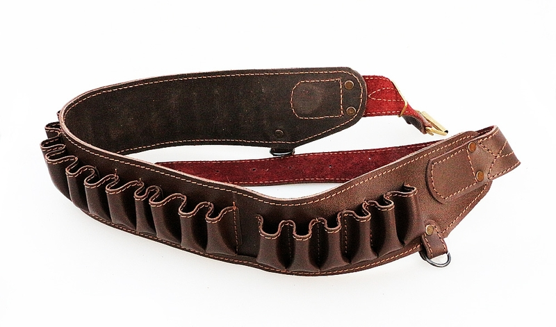

Про беспроводные клавиатуры от Apple

Ещё несколько слов о магии Apple, о которой многие любят рассказывать. Есть есть такая замечательная клавиатура - Apple Magic Keyboard. Работает через Bluetooth, использует батарейки или аккумуляторы AA, многим очень нравится и стоит на текущий момент в среднем от семи до девяти тысяч рублей. То, что просто положить их на полку и забыть о них на пару лет нельзя, я уже рассказывал в конце вот этого поста. Там для того, чтобы извлечь из новой, но неиспользовавшейся какое-то время клавиатуры батарейки, пришлось её сверлить. После экзекуций на клавиатуре перестали работать несколько клавиш. Покажите мне клавиатуру другого производителя, которая была бы оснащена подобной "функцией"! По-моему, только у apple новая клавиатура за 7+ тысяч рублей может выйти из строя, просто лёжа на полке. Я прямо восхищаюсь этой компанией! И это тоже не одиночный случай. Вот, недавно натолкнулся ещё на одну статью на хабре, описывающую ту же самую проблему: https://habr.com/ru/post/379771/. На этот раз сверлили и распиливали клавиатуру более удачно - она осталась жива. Конечно, это проблема скорее источников питания, чем клавиатуры как таковой. Но у меня подобные проблемы с батарейками возникали и в других клавиатурах. Там же достаточно было лёгким движением руки открыть крышку батарейного отсека, достать батареи и хорошо почистить контакты. Мне совершенно не нужны были для этих действий ножовка по металлу, молоток, отвёртка и дрель. Хотел пошутить про то, что для смены батареи или памяти в макбуке наверное скоро придётся пользоваться кувалдой и перфоратором, но вовремя вспомнил, что для этого теперь нужна паяльная станция, набор инструментов и неплохие навыки пайки мелких компонентов, хотя не уверен, что и это поможет - память теперь распаяна на плате и если вы хотите добавить или сменить память, вам нужно приобрести новый ноутбук. Замена батареи - тоже квест - банки залиты термоклеем. При неправильном прогреве для смены аккумуляторов можно довольно легко вывести макбук из строя.
Вернёмся к нашим клавиатурам. Недавно я столкнулся с другой их интересной "функциональной особенностью".
Мне сообщают, что нужно заменить старые аккумуляторы на новые, потому что их приходится менять в клавиатуре раз в сутки-двое. Аккумуляторам действительно много лет, используются они и в хвост и в гриву, поэтому принято было решение заменить как минимум половину на новые. Я читаю обзоры, изучаю характеристики, советуюсь с людьми, разбирающимися в теме и заказываю несколько наборов отличных аккумуляторов AA произведённых в японии фирмой Panasonic. Их даже в наличии в городе не было, пришлось ждать неделю. Так же заказываю качественное зарядное устройство, в числе прочего отображающее количество миллиамперчасов, залитых в каждую банку. Тестирую аккумуляторы - всё ожидаемо прекрасно.
Через три дня мне говорят, что мы приобрели бракованные аккумуляторы, потому что их тоже хватает в среднем на сутки использования. Так как обе заявки были от одного и того же человека, то я предположил, что проблема в самой клавиатуре. Обычно подобная клавиатура съедает комплект из двух аккумуляторов AA за 2 - 4 недели. Сутки - это чертовски мало.
Немного подёргав за хвост гугл, я обнаружил, что с этой проблемой сталкивалось множество других людей. Я просто оставлю цитаты c support.apple.com и discussions.apple.com ниже (есть и другие, но все они описывают примерно одно и то же):
Since upgrading to OS X 10.11.4, the battery life on Wireless Keyboard (older model, not the new Magic Keyboard) dropped from about 3 to 4 weeks to 1 to 2 days! I am using Apple's rechargeable batteries and the same set of batteries hasn't affected Magic Trackpad (also older model).
Magic Keyboard draining batteries suddenly
I saw that a few people had this question before, however I did not find any kind of helpful solution to this issue. Sorry if this is repetitive.
My Magic Keyboard is draining batteries in hours. Before, I could use rechargeable batteries with both the mouse and the keyboard and recharge them every few weeks (as I don't use my computer much). Usually, I'd have to charge the mouse batteries more often as the keyboard went on for a couple of weeks more. However, as of late, I noticed my keyboard was eating batteries really quickly. At first I thought I had to get newer batteries because maybe their performance wasn't at its best, but that didn't change anything.
Today, I was working with keyboard at 5% battery and my mouse at 80%. It lasted around 20 minutes. When the keyboard shut down, I got an old mouse with no batteries needed and used the batteries for the keyboard. They went from 80% on the mouse to 16% on the keyboard in a matter of 10 seconds. I got the notification of low battery INSTANTLY.
Is this normal? Is this an issue regarding my own keyboard or a generalised problem?
По-моему, гениально! Нужно предложить компании Apple начинать продавать в официальных магазинах это:

Конечно же, беленький, с фирменным логотипом и кармашком для air pods. Стоить тоже должен тысяч сорок, например. Прямо представляю себе эту картину - человек появляется в воркспейсе, смотрит в точку на дальней стене огненным взором и произносит с предельно пафосными интонациями: "Сегодня я буду кодить и ничто меня не остановит!". После чего надевает на себя патронташ с батарейками и садится на своё рабочее место.
Да, вариант решения проблемы вроде бы есть. Вероятно. Возможно. Пока ещё не проверили. На сайте саппорта Apple одному из посетителей дали ссылку на вот эту статью, где рассказано, как сделать клавиатуре reset и сказали, что это "может помочь". Дожили. Ресет клавиатуры. Ребут мыши. Ждём инструкции по форматированию коврика.